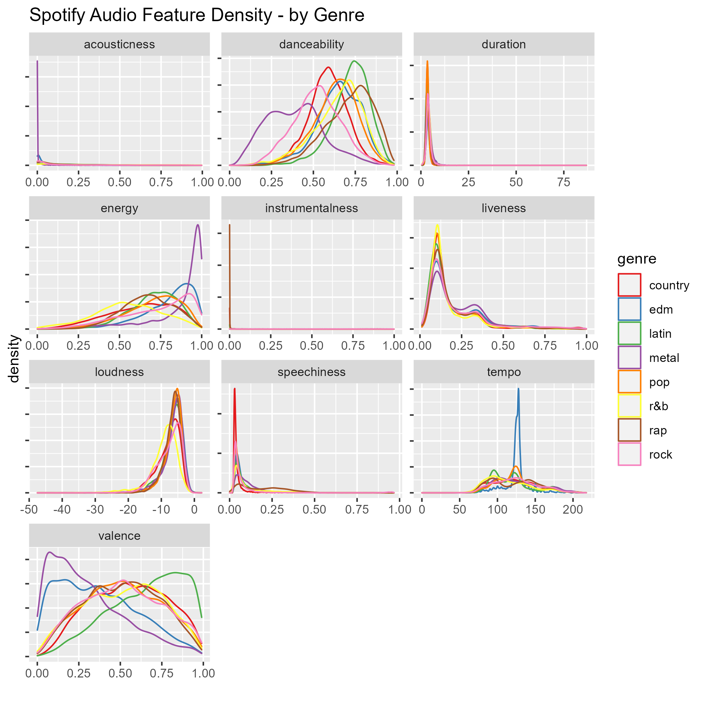
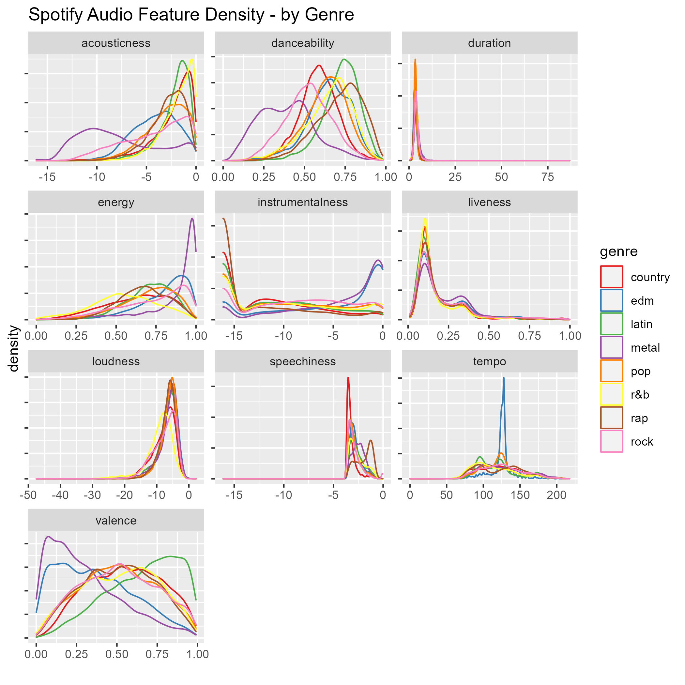
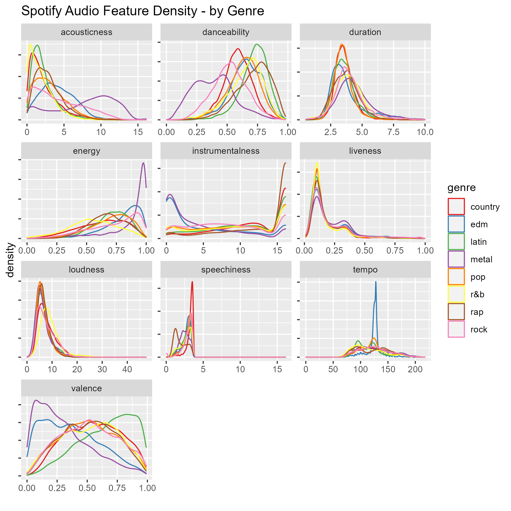
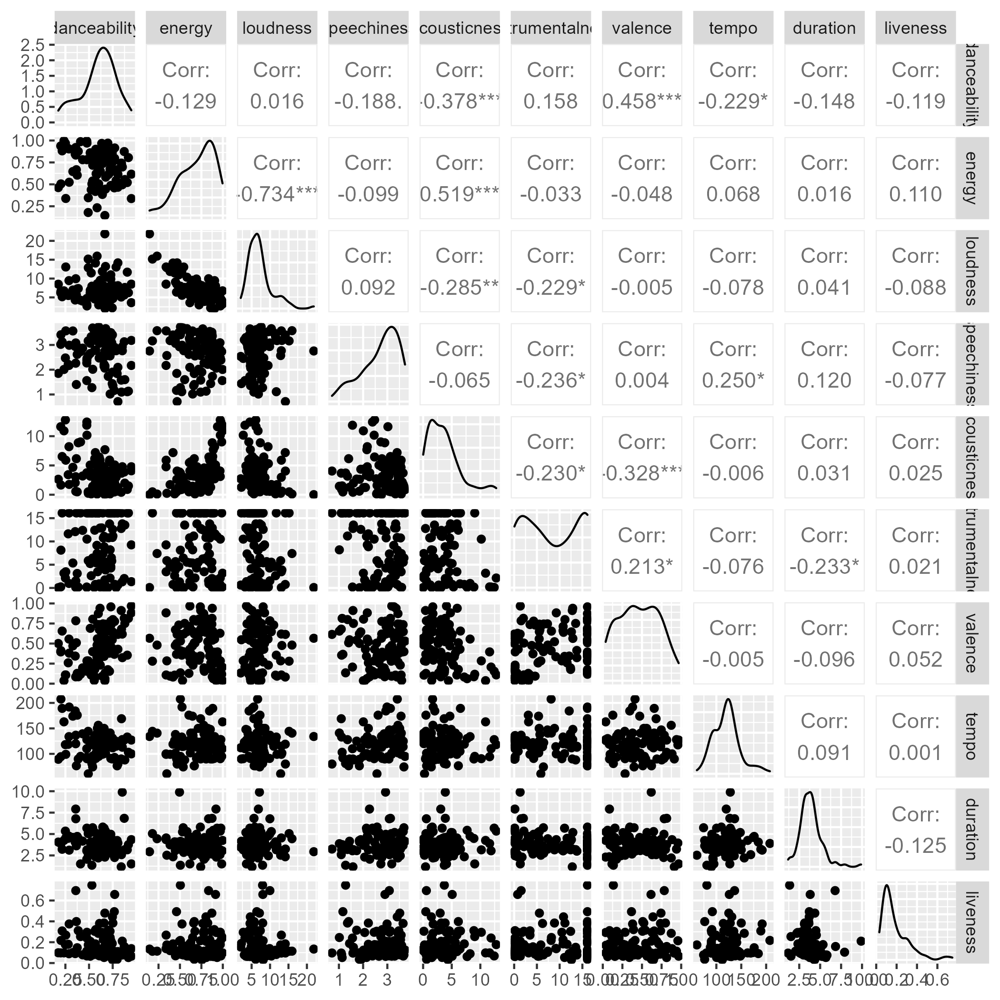
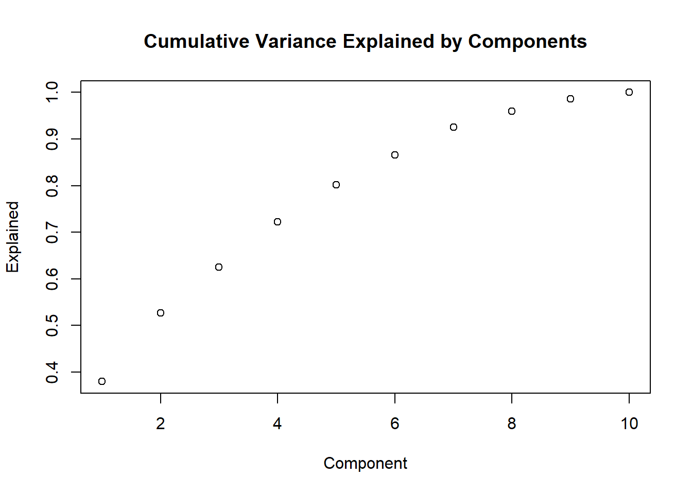
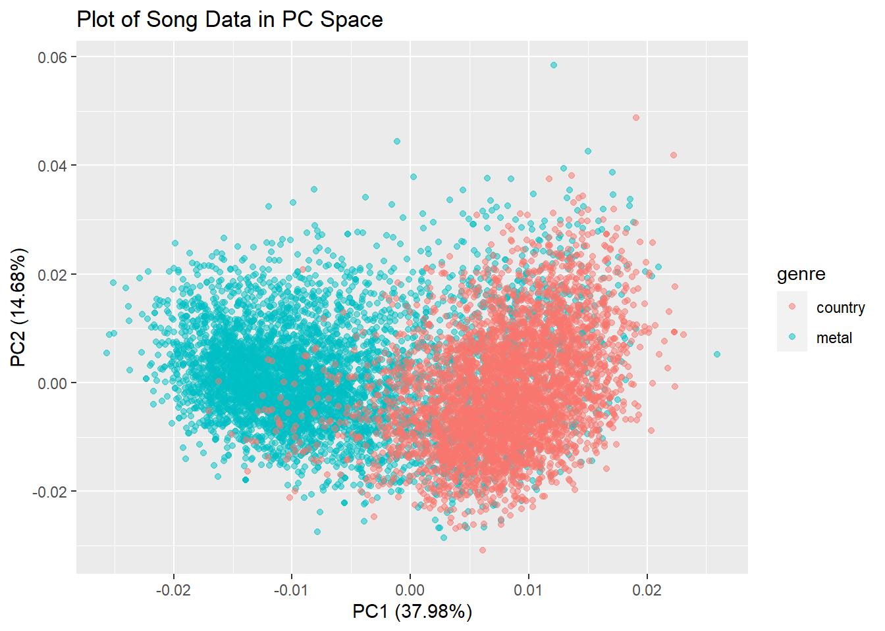

3 Spotify Data
One of my favorite hobbies is listening to music. Not just through headphones or in the car, but listening to live music and experiencing all of the energy that comes with live performances. Some time ago I found out that R had a package, spotifyr Thomas (2022), that was a wrapper for getting track audio features from Spotify’s API. I started exploring the functionality of the package along with a few projects people had done (see )
https://d2l.ai/index.html
First things first, I needed data before I could analyze. I utilized some function calls to pull down data from Spotify’s API with a few predetermined genres of music. From here, I read this in to R to begin exploring what data I had. There were some issues.

Acousticness seems drastically skewed to the right and concentrated right around 0. Instrumentalness and Loudness seem to also have similar problems. Duration seems fine, but there’s a large tail that extends to almost an hour and a half. There needs to be some cleaning done here to get the data into an easily analyzed format.

This seems a bit better but duration still looks skewed so lets see why there is such a long tail to the right. First I’ll start by looking at how many songs have a duration longer than 10 minutes.
Count
1 99There are only 99 songs with a duration longer than 10 minutes and the overall dataset has 36K songs. For the purposes of this analysis it’s best to take these out as they don’t represent the majority of the data.
One more look at the density plot before we start taking apart the features and looking towards prediction/classification.

4 Exploratory Data Analysis
| Genre | Count |
|---|---|
| country | 4282 |
| edm | 4696 |
| latin | 3644 |
| metal | 4990 |
| pop | 5368 |
| r&b | 3924 |
| rap | 4751 |
| rock | 4265 |

5 Data Separation for Modeling
6 Finding Separation in Metal and Nonmetal Genres
Performing classification analysis on 8 genres leads to poor accuracy. While each song has many features, the differences may be too small to meaningfully differentiate one genre from another. However, there are still genres that we could certainly recognize as being starkly different. Metal happens to be my favorite genre, but I do listen to country from time to time and it would be hard to mistake one song from each genre for the other. I’ll break this experiment out into two parts:
- One experiment will be looking at metal songs vs. every other genre grouped together as “nonmetal”
- A second experiment will look at metal vs. country music
6.1 Metal and Nonmetal
6.2 Metal and Country
Starting with logistic regression.
Predicted classes and performance.
Confusion Matrix and Statistics
Reference
Prediction metal country
metal 1295 147
country 221 1119
Accuracy : 0.8677
95% CI : (0.8546, 0.8801)
No Information Rate : 0.5449
P-Value [Acc > NIR] : < 2.2e-16
Kappa : 0.7346
Mcnemar's Test P-Value : 0.0001416
Sensitivity : 0.8542
Specificity : 0.8839
Pos Pred Value : 0.8981
Neg Pred Value : 0.8351
Prevalence : 0.5449
Detection Rate : 0.4655
Detection Prevalence : 0.5183
Balanced Accuracy : 0.8691
'Positive' Class : metal
Random forest example.
country metal
country 1153 113
metal 185 1331[1] 0.8842559
